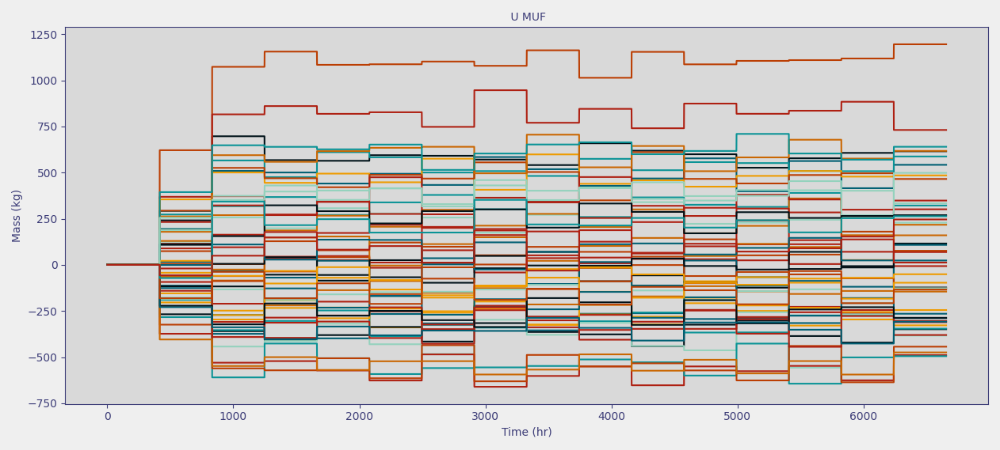

MUF and SigmaMUF#
Historical context#
Fulfilling safeguards regulations and agreements requires demonstrating that nuclear material has not been lost, removed, or otherwise been unaccounted. Both containment and surveillance methods in addition to direct accountancy of nuclear material is used to meet these requirements. Containment and surveillance (C/S), as the name implies, is used to contain (e.g., seal containers) and surveil (e.g., optical cameras) nuclear material. C/S is complemented by quantitative material accountancy which seeks to quantify the amount and form of nuclear material in a given area. MAPIT focuses on providing tools and routines used in accountancy of nuclear material. The material balance, discussed in depth here, is the cornerstone of nuclear material accountancy. For a longer overview of the goals and safeguards and C/S or the history of material accountancy, readers are encouraged to check the references as a detailed history of these topics are out of scope for this document.
Theory#
MUF#
Accountancy of nuclear material is of interest to many regulatory bodies. One principle quantity used to ensure material is accounted for is the material balance calculation. This is sometimes also called Material Unaccounted For (MUF) or Inventory Difference (ID). Material balance calculations are performed over defined physical areas of a nuclear facility, called material balance areas (MBAs), at regular intervals called material balance periods (MBPs). There are a variety of metrics and criteria used to determine both the MBA (in both structure and quantity) for a given facility and the associated material balance period. Discussion of MBA selection criteria will not be discussed here and we refer the reader to the references for further inquiry. The material balance can be calculated by understanding the inputs, inventories, and outputs for a given material balance area. First, let the material balance period be represented as a non-zero, positive real integer:
Next, consider the sequence of material balance period values:
Then the \(i\)th material balance can be calculate as follows:
Alternatively, if continuous flows are present (i.e., continuous inputs and outputs), then the material balance can be represented as:
\(I_{t,l}\) is the input to the material balance area at time \(t\) and location \(l\)
\(O_{t,l}\) is the output of the material balance area at time \(t\) and location \(l\)
\(C_{i,l}\) is the inventory at time \(\text{MBP}_i\) and location \(l\)
\(C\) was chosen to denote container and avoid overloaded notation between inventory and input terms
The material balance for has three primary terms; input, output, and inventory. For each term, there may be multiple different locations so \(l_0, l_1, l_2\) are used to denote the set of different measurement locations for input, output, and inventory, respectively. Correspondingly, the sum \(\sum_{l \in l_0}\) indicates that the quantity should be summed over all input locations. The material balance simply sums all inputs over all locations during the material balance period, sums all the outputs over all locations during the material balance period, and takes the difference of inventory terms between the previous and current balance times for all locations. These terms are then used to calculate input - output - change in inventory.
There is a separate expression for material balances with discrete items versus continuous flows. The expression for the latter uses integrals over the time period of interest to denote that these quantities are usually integral rather than summed. For example, discrete canisters of material arriving to a material balance area might have their contents weighed, assayed, and summed for the material balance period. A continuous input might be a flow measured in mass per unit time, which would be integrated over the material balance period instead of summed.
Note
Material balances are calculated at discrete intervals of time and are consequently not continuous. There are a variety of ways to represent the material balance graphically. In MAPIT, we opt to have a continuous representation by holding the value calculated at \(t=\text{MBP}_i\) to \(t=\text{MBP}_{i+1}\) at which point the value is updated. This representation results in a step-like representation which can be seen in the figure below.
{kind=link}
{kind=link}
The material balance is intuitive and does not make assumptions about potential material loss pathways. The material balance should be exactly zero due under normal operating conditions as all material should be accounted for. In contrast, the material balance should be non-zero under anomalous conditions that cause material losses or gains that are not measured. However, the material balance will always be non-zero, even under normal operating conditions, due to the presence of measurement error. Additional analyses are then required to detect material loss in the presence of measurement uncertainty.
It is useful to express a series of MUF values as a sequence which facilitates various trend testing and statistical analyses:
The MUF sequence can be represented as a Gaussian distribution as, over long enough periods of time and enough samples, even measurement biases behave as random errors. The fundamental goal of material accountancy then is to detect a shift in the distribution of values in a MUF sequence. Consider the two normal distributions below with different means and a standard deviation of one. This shift in the mean between two distributions represents behavior that would occur during an anomalous operation of a facility. However, the mean shift between the distribution would be difficult given that the shift is small compared to the standard deviation of the distributions.
Tip
You can verify this yourself by calculating an odds ratio using Bayesian principles. That is, for two normal distributions \(\mathcal{N}(\mu_1, \sigma_1^2), \mathcal{N}(\mu_2, \sigma_2^2)\), the odds of belonging to \(\mathcal{N}(\mu_1, \sigma_1^2)\) over \(\mathcal{N}(\mu_2, \sigma_2^2)\) (assuming equal odds of MUF value being normal or off-normal) can be calculated as the radio of the two PDFs. While this isn’t an exactly true statement (the odds of a MUF value having equal odds of being normal or off-normal isn’t quite true), this is a simple way to illustrate the relationship between the shift in the mean of a MUF sequence and the standard deviation.
See also
The guided exercises included in the documentation contain concrete examples of the impact of measurement error on the MUF distribution and overall detection probability.
{kind=link}
{kind=link}
Now consider the same mean shift, but with a smaller standard deviation for both distributions. The overlap between the distributions has become notable smaller which makes discriminating between the two distributions easier. Any loss pattern, and thus the underlying anomalous MUF distribution, would be difficult to quantify in practice. However, this example should make clear that the uncertainty of the MUF sequence is an important factor in detecting material loss. There are a variety of techniques that can be applied to the MUF sequence to monitor for anomalous behavior, but all techniques are ultimately limited by the uncertainty.
{kind=link}
{kind=link}
\(\sigma\)MUF#
\(\sigma\)MUF, or the uncertainty in the MUF sequence is an important metric given it’s impact on the probability of detection for anomalous conditions. It is important to quantify \(\sigma\)MUF given the connection to probability of detection. Regulatory stakeholders often implement limits on \(\sigma\)MUF for facilities. The following derivation below describes the analytical expression for \(\sigma\)muf.
Note
For simplicity, the following derivation shows the calculation of a single entry of the \(\sigma\)MUF sequence (i.e., \(\sigma\)MUF\(_i\)). This calculation would need to be performed at each balance period to form the full \(\sigma\)MUF sequence. Note that the \(\sigma\)MUF sequence is as follows: \(\sigma\text{MUF} = \{\sigma\text{muf}_0, \sigma\text{muf}_1, ..., \sigma\text{muf}_n \} \\\)
For simplicity we introduce the notation of \(\sum_{t=\text{MBP}_{i-1}}^{\text{MBP}_i}I_{l,t} = I_{l}^*\) and \(\sum_{t=\text{MBP}_{i-1}}^{\text{MBP}_i} O_{l,t} = O_{l}^*\) for the case of discrete input and outputs to denote the total input and output over the \(i\)-th material balance. It follows that
Substituting in the multiplicative error model for each term and starting with the input:
Note the following:
\(I_{\text{true}, l}^*\) behaves as a constant for a specific slice in time
The true input won’t change at an instant in time regardless of how many times it is measured
Continuing on and zeroing out constant terms it follows that
It’s generally assumed that the random and systematic errors are random variables, and consequently uncorrelated with each other, which leads to
As the true input, \(I_{\text{true}, l}^*\), the variance of random variate \(R_i\), and variance of systematic variate \(S_i\) cannot be known in practice, the observed inventory, \({I_{l}^*}^2\), relative random standard deviation for location \(l\), \(\delta_{R,i}\), and relative systematic standard deviation for location \(l\), \(\delta_{S,i} \), are substituted into the previous expression as an approximation leading to the final expression for the estimated variance of the input.
Assuming that each input location is uncorrelated, then it is possible to simply sum the variances for each location together such that
A similar exercise can be performed on the output term leading to the expression
The inventory term differs from the inputs and outputs since there is a temporal correlation between inventory \(i\) and \(i-1\). Using the same reasoning as before
It is assumed that the constant values for inventories are uncorrelated, random and systematic errors are uncorrelated with each other, and random errors from different times are uncorrelated. However, systematic errors at the same location but different time, (i.e., \(S_{i,l}\) and \(S_{i-1,l}\)) are correlated as it is assumed there is no recalibration. This results in the expression below. Note the additional highlighted covariance term that arises correlated systematic errors between successive material balance periods.
This is again approximated using the actual measured values as the true values are unobservable and is summed across locations.
Substituting expressions for variance of input (5), inventory (7), and output (6) into the definition of \(\sigma\)muf from (4) yields the final expression (8) below. Note that \(\sigma\)muf is the square root of (8) as (8) expresses the variance.
Note
This assumes one strata for each measurement. That is, an item or flow is measured once when it has the same attributes. Performing multiple measurements on the same strata will reduce the relative standard deviation terms by approximately \(\frac{1}{n}\) and should be accounted for in the \(\sigma\)muf calculation accordingly.
Equation (8) can be expanded by replacing the inputs and outputs with their non-integrated quantities. This is done to better illustrate the different components that are calculated in MAPIT.
Discussion#
Much of the traditional literature and research around material balances and associated testing was developed in the 1980s. The relevant seminal papers are listed in the additional resources portion of this document. There are a few key points from these papers that are important to note.
A natural inclination to improve performance of any testing on the material balance would be to reduce the overall uncertainty through 1) smaller material balance areas which result in smaller inventory terms, 2) more frequent material balance frequency resulting in smaller input and output terms, or 3) some combination of the two. Avenhaus and Jaech considered this question and found that none of those procedures necessarily lead to better performance, and in some instances, might lead to a lower detection sensitivity. The work by Avenhaus and Jaech was particularly notable as it lead to several important findings:
Considering a statistical test with maximum test power (i.e., a test with the highest probability of detection for any loss of material of a particular size) applied to a fix length of time, the optimal test is one that ignores intermediate balance evaluations. Put another way, the optimal test for a loss of material over a fixed period of time is one that considers the sum of all intermediate MUF values. This is the same as if no intermediate MUF values had been taken; as if the balance was conducted over the entire period of interest. This applies to protracted, but not abrupt, losses. Here, protracted loss is one that occurs over multiple balance periods or areas.
Concrete example; there might be a regulatory goal for detecting a loss within 3 months. The optimal statistical test would be a balance over a 3 month period; performing a monthly balance provides no benefit with respect to maximum detection probability of a loss over a three month period.
Combining intermediate MUF values in some optimal way, perhaps as a weighted average, still results in a lower detection probability than a global MUF that only considers the beginning and ending states. * An important exception here is that this statement only applies to the unknown loss pattern. Performance improvements can be seen with an optimally ordered MUF sequence if the loss pattern is known, but in practice, the loss pattern is never known
Even applying statistical tests to each intermediate MUF value and then linearly combining the results (as opposed to a test on the combined MUF values) still results in a lower detection probability than a test on a global MUF.
Further, Avenhaus and Jaech showed that not only do these statements apply to time (i.e., different material balance periods), but also to space. Subdividing a material balance area provides no benefit in terms of detection probability, and perhaps even decrease detection probability, compared a test on the larger material balance. These statements also assume a fixed false alarm probability.
Important
Avenhaus and Jaech’s work applied only to the probability of detection. There are other benefits to subdividing material balances into smaller units of time or space; principally to localize a potential material loss in space or time, but this comes at a cost to detection probability, specifically for protracted losses that are split over multiple balances or areas. Again, this statement applies only to protracted losses, not abrupt. Avenhaus and Jaech’s work only considered random errors, but Burr and Hamada later went on to show that the inclusion of systematic error does not change the limitations of subdividing material balance areas (i.e., probability of detection does not increase for more frequent balances and smaller balance areas).
Material balance iterations#
In practice, only one material balance sequence, \(\text{MUF} = \{ \text{muf}_0, \text{muf}_1, ... \text{muf}_n \}\), can be observed. Following discussion from the error models, it is often advantageous to estimate the performance of a safeguards system by performing statistical analyses and determining probabilities of detection. It would be very difficult to estimate probability of detection for a facility using experimental data alone. However, simulation tools can help provide these estimates. MUF and \(\sigma\)MUF can subsequently be represented as 2D matrix such that one dimension represents the MUF sequence in time and the other dimension represents different draws of random variates from the error model. Later sections will have additional discussion on the topic of this matrix representation, but for now, it is important to note this concept as this is how MAPIT calculates MUF and \(\sigma\)MUF.
MUF implementation#
Important
Note that this function is not intended to be used standalone through direct calls, rather, it is designed to be called through the MBArea class of StatsProcessor.
The MAPIT implementation of MUF is the first function in MAPIT.core.StatsTests. The MUF calculation requires a few key variables:
Input, inventory, and output measurements
Input, inventory, and output times
Together the measurements and times should from a timeseries. The time entries should represent the time at which the measurement is taken and should monotonically increase. So a measurement taken at the start is t=0 and a measurement taken one day later should be t=24 (hours) or t=1440 (minutes), etc. There are no unit requirements, but the timeseries should all use the same units of time.
Material balance period
This should have the same units as the input, inventory, and output time
Since each measurement provided to MAPIT could potentially have a different length and/or number of time steps, we first determine the maximum timestep:
117 # Loc = GUIparams.Loc
118 # GUIObject.PB.setValue(0)
119 # GUIObject.StatDlg.UpdateDispText('Calculating ' + GUIparams.labels['Box12L'])
120 # QtCore.QCoreApplication.instance().processEvents()
121 # GUIObject.PB.setValue(0)
122
MAPIT calculates the entire MUF and \(\sigma\)MUF sequence (i.e., Equation (10) ) which results in a 2D matrix that has a shape (iterations, MBPs) where iterations is the number of iterations/draws from the error model over the total length of the data and MPBs is the total number of balance periods for the dataset.
Example
Consider the following example
MBP = 100
Largest time in dataset: 670
Iterations: 25
MAPIT will calculate a \(\text{MUF}\) sequence that is 6 balance periods long (0:100, 100:200, 200:300, 300:400, 400:500, 500:600). Since iterations are specified to be 25, MAPIT will perform the calculation of Equation (3) 25 times, each time, drawing a different set of random variates from the multiplicative error model with relative standard deviations that were specified by the user. The MUF value returned by MAPIT will have a shape of [25, 600].
Important
MAPIT represents periodic statistical quantities as continuous, so although there are only 6 balance periods, this is represented as 600 timesteps (once per unit time). Each material balance iteration (i.e., slice [n, 0:600]) will only have 6 unique values that are held constant between material balance updates.
MAPIT calculates the distribution of MUF values (i.e., \(\boldsymbol{\text{MUF}} = \{\text{MUF}_0, \text{MUF}_1, ... \text{MUF}_n\}\)) using the equation for individual \(\text{muf}_i\) values (Equation (1) or (2)). There are three dimensions that require iteration; time (the number of balance periods), locations (multiple input/inventory/output terms) and iterations (unique draws of the multiplicative error model). The only component that can be effectively vectorized is the iterations component as the potential for non-uniform sampling rates as a function of time and/or locations require consideration of each component individually. The MUF calculation still remains fairly quick in spite of a largely non-vectorized solution as the underlying computations are fairly trivial.
At a high level, MAPIT vectorizes the error model iterations, but uses a for-loop to iterate over the location and time components.
Of the two loops (balance periods and locations), MAPIT uses the time component as the outer for-loop and locations as the inner for-loop.
Note
The outer time loop is indexed from i to MBPs rather than starting at zero. This facilitated more understandable indexing, particularly when slicing some of the time indices, but runs counter to the standard python notation that indices start at 0.
The outer for-loop is defined as follows:
150
The outer loop calculates the muf\(_i\) (assuming that the input and outputs are flows):
The summation component represents the inner for-loop and is split across three separate loops, each representing the measurement type:
154
174 for i in range(1, int(MBPs)): #each MBP
192 processedInputTimes[j] >= MBP * (i - 1),
The integral component, assumed to be flows in units of mass/time, need to be integrated before they can used in the balance calculation. This is done using a customized trapezoidal integration routine, MAPIT.core.AuxFunctions.trapSum, which is explained in more depth in the computational considerations part of this guide.
The relevant segment of time corresponding to \([\text{MBP}_{t-1}, \text{MBP}_t]\) must be determined before the integration is performed. This is represented by the logicalInterval variable (note that the interval for the input terms is shown, but it is also calculated for the output terms):
164 title = "MUF"
165 pbar = alive_bar(force_tty=True, total=int(totalloops), spinner=_getSpinner(), bar='circles', title=title+' '*(_longestTitle() - len(title)))
166 update = pbar.__enter__()
The relevant times for the current balance period must also be identified for the inventory, but the procedure is easier as only the start and end points of the time series need to be identified, not all values in the interval. This is because the inventories, already assumed to be in the correct mass units, do not need to be integrated and can be subtracted (i.e., \(C_{i,l} - C_{i-1, l}\)).
Finally, all of the components are combined and MAPIT iterates over material balance periods and locations to calculate MUF.
\(\sigma\)MUF implementation#
Important
The final expression for \(\sigma\)MUF derived in Equation (9) includes a covariance term that accounts for the shared systematic bias across two successive balance periods (assuming no recalibration). However, the MAPIT implementation of \(\sigma\)MUF does not include the shared covariance term. In practice, \(\sigma\)MUF is calculated as a sum of squared errors and neglects covariance. MAPIT consequently uses this more conservative estimate to be better aligned with the state of practice in material accountancy.
Important
Note that this function is not intended to be used standalone through direct calls, rather, it is designed to be called through the MBArea class of StatsProcessor.
The implementation of \(\sigma\)MUF follows much of the logic used in the material balance calculation;
The entire sequence from Equation
mufdistis calculatedInput, inventory, and output terms are considered separately
Time components are vectorized whereas locations and balance periods are expressed in explicit floor loops
The structure of the calculation is identical to that of MUF. The key deference is the quantity calculated, here \(\sigma\)muf\(_i\) is calculated, instead of muf\(_i\). Recall that \(\sigma\text{muf}_i\) is calculated as follows (noting that we are ignoring the covariance term):
Following from the muf calculation, integral terms are integrated using MAPIT.core.AuxFunctions.trapSum with locations and balance periods iterated over using a for loop. It is often desireable to track the contribution to \(\sigma\)MUF by component, so MAPIT rearranges each term slightly to better track each component. For example, the inventory term is expressed as follows:
Here, the random and systematic contributions can be tracked separately. The input and output terms are calculated in a similar way, but only the input term will be discussed for brevity.
490 timeSteps = np.round(np.max(np.array([A1, A2, A3])))
491
492
493 MBPs = np.ceil(timeSteps / MBP)
494
495 #SEMUF contribution from individual components is difficult to
496 #determine in some ways, but it is assumed that, for example,
497 #the random component is (value)**2 * (rand)**2
498 #probably reasonable for a simple MB, but changes if
499 #covariance arises
500 SEMUFCalcs = np.zeros((iterations, int(MBPs * MBP)))
First, the input term is integrated. Then the integral quantity and user supplied relative standard deviations are squared and summed. These are added together and ‘‘tiled’’. Variables VR and VS are a vector with length equal to iterations and must be ‘‘tiled’’ for all time steps in the given balance. The contribution components are then stored in a separate array. This process repeats for all locations and balance periods.
The inventory calculation proceeds in a similar manner but differs in that the first and subsequent balance period calculations differ. The previous inventory during the first balance is assumed to be zero, and rather than trying to account for that in the array by prepending a series of zeros, MAPIT simply drops that term. This is implemented by checking if the first balance period is being calculated (i==1), and if so, not including inventoryAppliedError[j][:, startIdx].
518 title = "Sigma MUF"
519 pbar = alive_bar(force_tty=True, total=int(totalloops), spinner=_getSpinner(), bar='circles', title=title+' '*(_longestTitle() - len(title)))
520 update = pbar.__enter__()
521
522
523 InpVar = np.zeros((iterations,int(MBPs * MBP)))
524 InvVar = np.zeros((iterations,int(MBPs * MBP)))
525 OutVar = np.zeros((iterations,int(MBPs * MBP)))
526
527 #-------------------------------------------------------------------------------#
528 #------------------------------ SEID Calculation -----------------------------#
529 #-------------------------------------------------------------------------------#